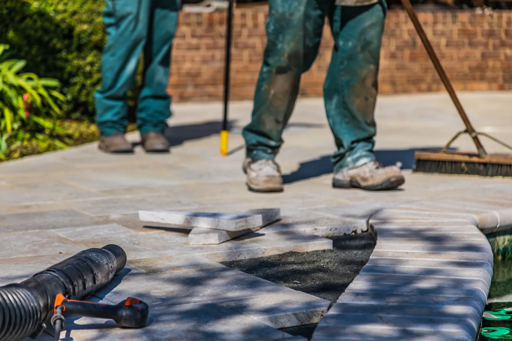
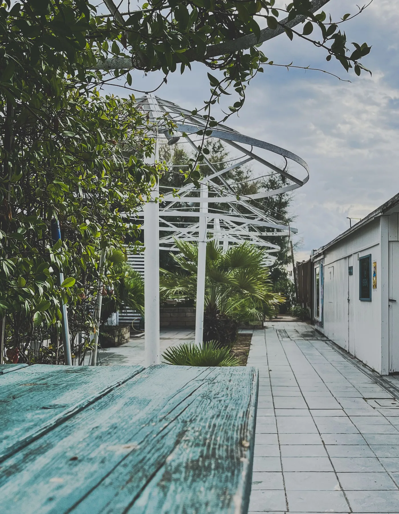
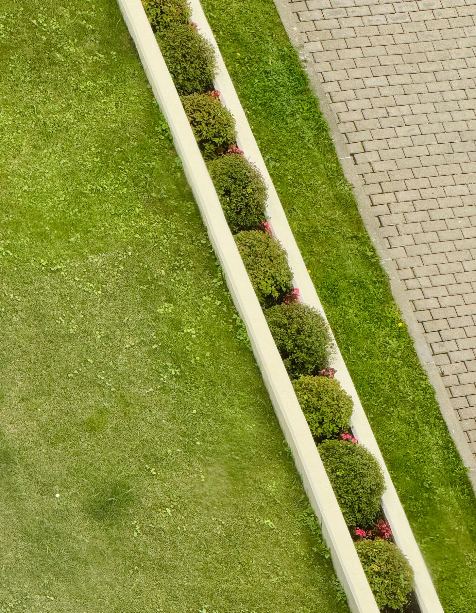

01
Garden design
Layouts, materials and planting planned around how you want to use the space.
Discuss your garden ↗Garden design & landscaping
We plan, build and care for outdoor spaces that feel natural, practical and completely yours.
What we do
From the first sketch to the final planting, we keep every part of the project clear and joined up.
Layouts, materials and planting planned around how you want to use the space.
Discuss your garden ↗Well-built outdoor areas with clean lines, considered drainage and durable finishes.
Plan an outdoor space ↗Balanced, seasonal planting that suits the soil, light and level of maintenance you want.
Create a planting plan ↗Flexible maintenance visits to keep the garden healthy, tidy and ready to enjoy.
Ask about garden care ↗
How it works
Share the space, your ideas and the practical things the garden needs to do.
We explain the layout, materials, timing and costs without unnecessary jargon.
One team handles the build and keeps you updated from start to finish.
Our style
Relaxed planting, practical surfaces and enough structure to make every part of the garden feel intentional.


“A good garden should look considered without feeling over-designed.”
Juniper & Stone approachStart your project
A few details are enough to start. We will reply with the next sensible step.
Greater Manchester projects
Clear written proposals
Design, build and care
Good to know
Yes. The concept is built around one joined-up service, from early planning through to landscaping and planting.
Yes. Smaller spaces often benefit most from a clear layout, useful storage and carefully chosen planting.
No. Photos, rough ideas and a list of practical needs are enough to start a useful conversation.